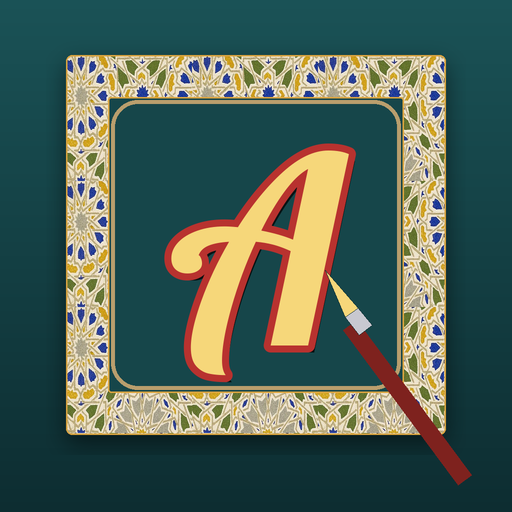

<- all projects

Letterform Lab
PC
Volume
Live
Trace the strokes. Light up the pier.
Seabright Pier was famous for hand-painted signs, every one lettered by Augusta Vane. Ten years ago she vanished and the shops put up plastic. Now her brushes, her lettering book and a note have come to you. Each shop gives you a word, a style and a ground colour, and you paint it one letter at a time by following each stroke. Finish with a shadow, an outline or gold leaf and watch the shop light up. 120 signs over six districts, twelve lettering styles, and a gold letter hidden on every street that spells out what Augusta left you.